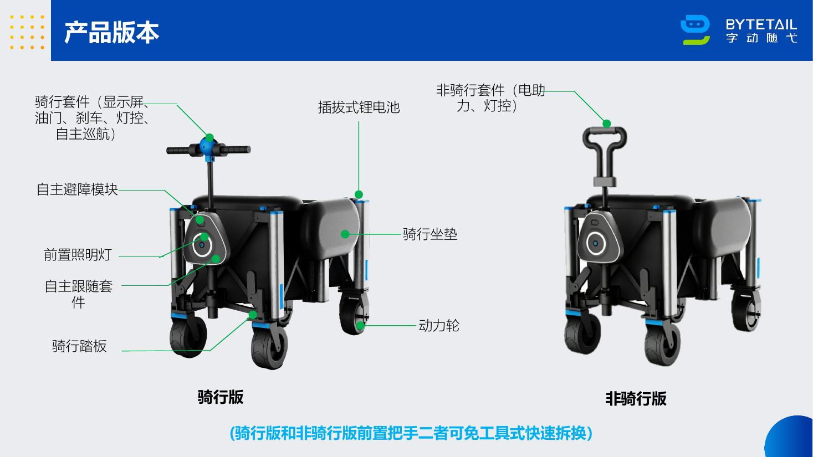
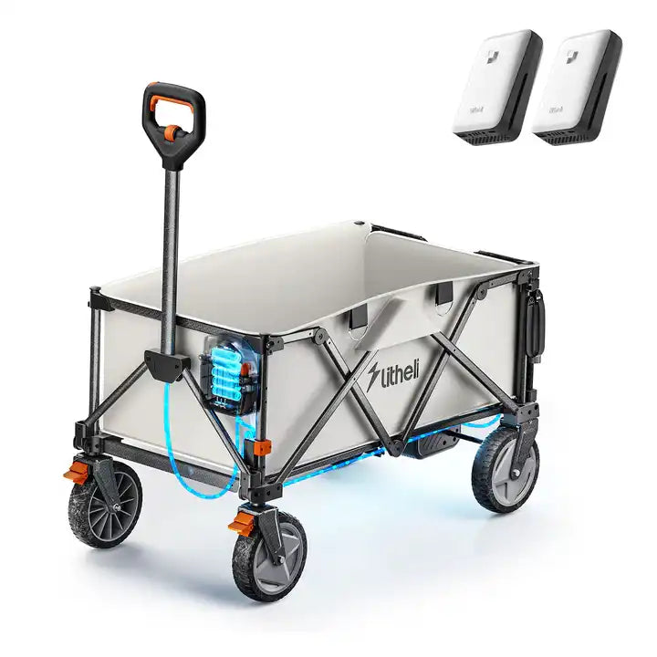
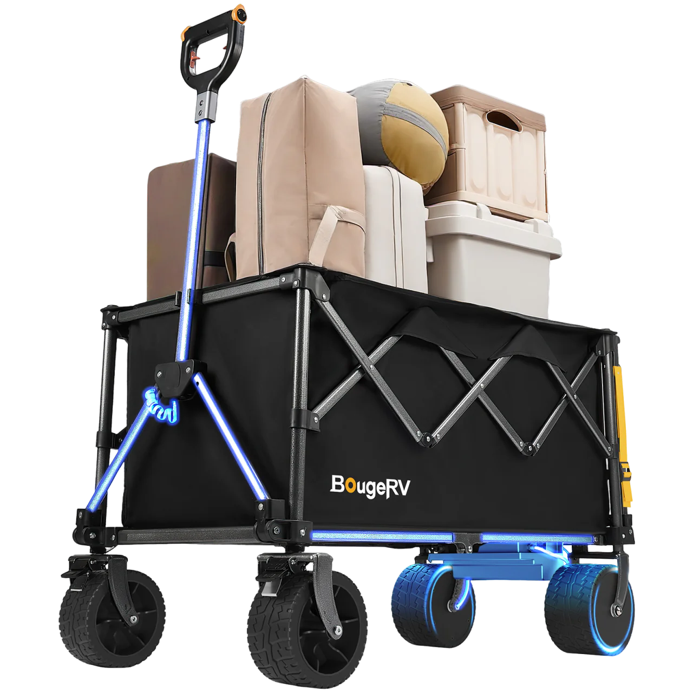
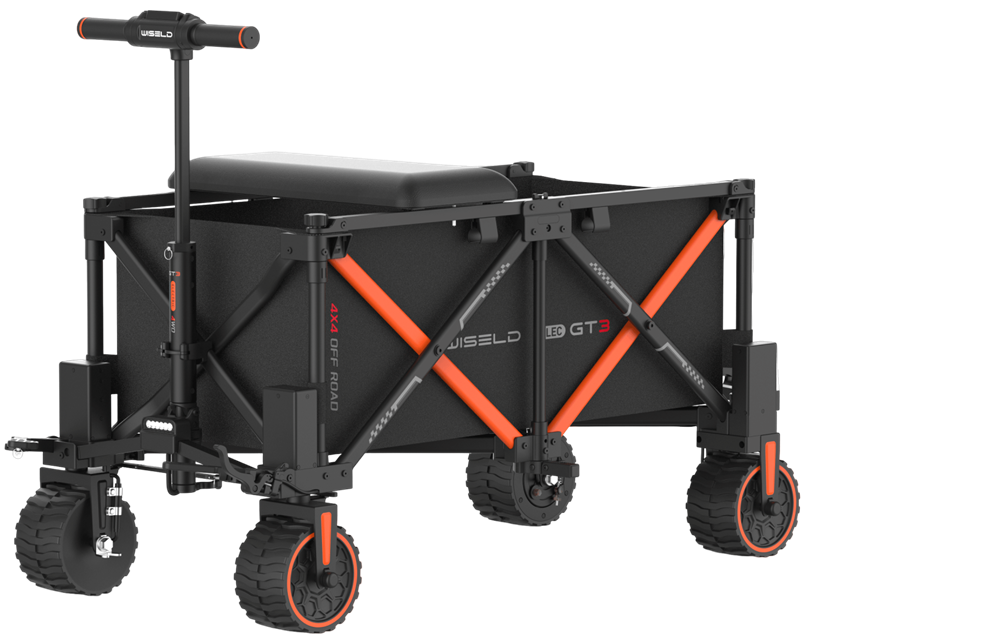

产品 01
骑行版
骑行 · 自动跟随 · 遥控 · 电助力 · 手动推拉
德国 + 法国｜消费者与社媒研究
我判断这款产品在欧洲具备一定机会。自动跟随是区别于普通折叠车和电助力车的重要卖点，也能进一步强化省力体验。下一步建议通过真实使用视频，重点证明跟随稳定性、安全性及复杂场景下的实际价值。

骑行 · 自动跟随 · 遥控 · 电助力 · 手动推拉
自动跟随 · 遥控 · 电助力 · 手动推拉
* ≤20 kg不含电池、电机，不能作为消费者实际搬运重量使用。以上参数来自客户产品资料。
先看答案
我的市场判断
欧洲存在明确的省力搬运需求。自动跟随具备差异化价值，下一步应重点验证完整重量、复杂路面、自动跟随安全和折叠收纳表现。
有没有真实需求
露营装备、儿童用品、钓具、摄影器材从停车点搬到使用地点，电助力的价值一眼能懂。
德国用户频繁讨论轮子、折叠体积和能否通过门；法国零售端也已有大量普通折叠车。
有新鲜感和传播性，但公开讨论量远低于普通折叠车。购买前需要更多真实演示。
网上怎么说
WISELD GT3折叠骑行车演示，444赞、18条评论。说明产品有视觉吸引力，但单条品牌视频不能代表欧洲购买意愿。
查看视频 ↗同品牌展示不同路况，互动明显低于首发型内容。用户更需要连续、可复现的测试，而不是一次通过。
查看视频 ↗带定速的电动手拉车引发是否可在公共空间使用、是否需要急停装置的讨论。
查看讨论 ↗数据覆盖：过去24个月共抓取208条候选内容，经人工相关性筛选、去重后，采用9条直接相关TikTok、10个重点论坛讨论及6个测评样本。社媒数字用于判断传播表现，不直接等同购买需求。X因无可用登录数据未纳入。
欧洲已经有什么
总体结论
客户产品不是没有竞品，而是横跨三个赛道：普通折叠车、电助力折叠车、可骑行电动车。越接近骑行，价格与合规门槛越高。

60 kg、150–200 L、步行速度、电助力、可折叠。德国已有独立测评，价格约€240–€300的促销区间。

法语官网售价快照€369.99，页面主打最高200 kg、露营、园艺、海滩和野餐。

可骑行、可拖行、可折叠，2WD/4WD，28–33 kg，250–300 kg载重，价格约US$1,449起。
卖给谁、在哪里用
从停车点到营地、活动区或钓点，用户需要一次搬运帐篷、冷藏箱、饮水、座椅和儿童用品。自动跟随可以让双手继续拿装备或照顾家人，是核心卖点最容易被理解的场景。
装备较重、移动距离明确，用户对省力和连续运输的价值感知较强。
证据基础：露营和装备搬运讨论中反复出现冷藏箱、钓具、摄影器材及活动物资。木柴、园艺土、饮料和购物等使用频率更稳定，可降低产品对露营季节的依赖。
证据基础：同类产品官网和测评已将园艺、木柴、购物列为常见用途。需求很强，但轮胎宽度、下陷和真实续航争议明显。没有满载软沙测试前，不建议突出“全地形”。
证据基础：7个沙地重点讨论样本，多次提到窄轮下陷、宽轮或气球轮更有效。为什么不买
| 问题 | 级别 | 为什么重要 | 我建议怎么做 |
|---|---|---|---|
| 完整整车重量 | 高 | 现有资料的≤20 kg不含电池、电机。用户实际搬上车时感受到的是完整重量。 | 公布两个版本含电池后的重量，并拍摄单人装车。 |
| 沙地、草地和碎石 | 高 | “全地形”是最容易被质疑的承诺；已有用户反馈电动轮在软沙中打滑下陷。 | 用满载100 kg分别测试干沙、湿沙、草地、碎石和坡道。 |
| 跟随与制动安全 | 高 | 在人群、儿童、宠物附近，用户会担心误跟、夹碰、溜车和失联。 | 展示急停、失联停车、障碍物、下坡和儿童横穿测试。 |
| 折叠后的搬运 | 中高 | 同类产品普遍不是“折起来就轻”；收纳体积和能否稳定站立直接影响体验。 | 展示大众Golf、雷诺Clio等常见车型后备箱实装。 |
| 价格与售后 | 中高 | 普通折叠车已经能解决基础搬运，电动与智能功能必须证明多花的钱值得。 | 先建立欧盟维修、备件和电池更换方案，再谈溢价。 |
| 骑行功能 | 高 | 速度、安全边界和公共空间使用规则，会显著增加理解成本与责任风险。 | 欧洲首发建议优先非骑行版；骑行版先做法规和封闭场景验证。 |
先确定主推版本
建议优先非骑行版，减少法规与责任风险。
补齐五组实测视频
重量、折叠装车、软沙、坡道、跟随急停。
再测试欧洲用户
用真实视频验证价格接受度，而不是只问“喜不喜欢”。
证据与口径
研究范围
德国、法国为重点；公开社媒、论坛、测评媒体、品牌官网和法语/德语零售页面。时间截至2026年7月28日。
筛选标准
同类产品必须至少满足相近载物结构、折叠形态和户外搬运场景；功能相似但形态不同的产品仅作近邻参考。
证据边界
品牌视频证明“有人传播”，不等于“消费者愿意购买”；单条评论只作为风险提示，不外推成普遍结论。
本次限制
法国独立用户内容少于德国；X未纳入；未进行付费数据库销量验证，因此不输出市场规模和销量预测。